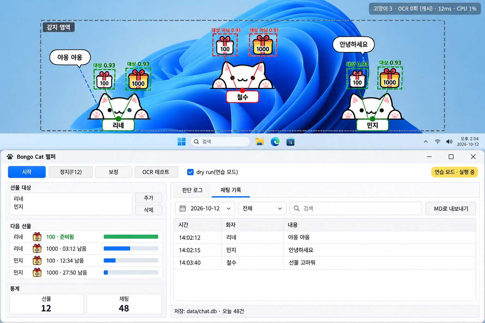
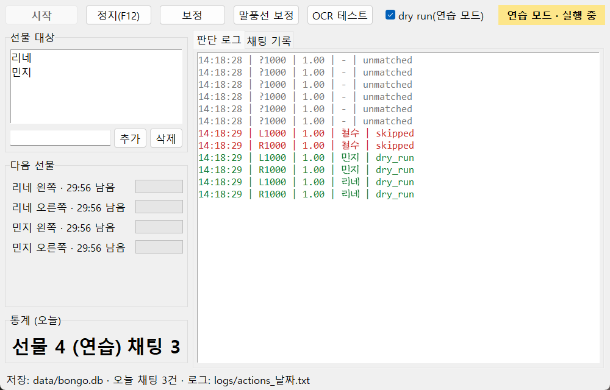
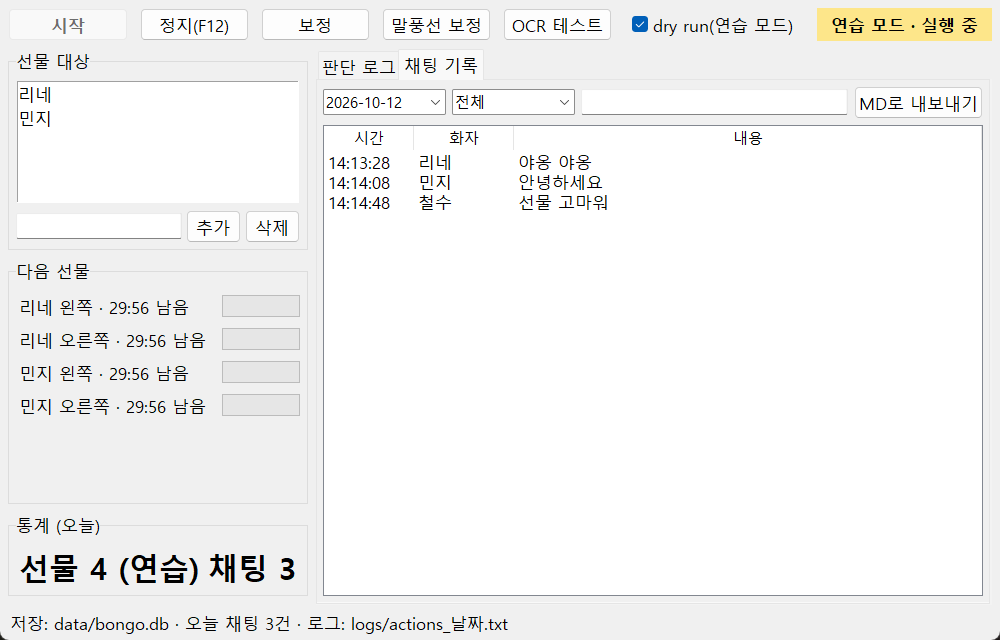

봉고캣 헬퍼 설계도
지정한 이름에게만 자동 선물하고, 채팅을 기록하는 Windows 프로그램 · 단계마다 확인하고 다음으로 넘어갑니다
0 / 10
한눈에 보는 흐름
0 Codex로 목표 그림 🔒→
1~3 기본 모듈→4~5 보정·디버그 🔒→
6 자동 선물 🔒→7 채팅 기록 🔒→8 제어 패널 🔒
Claude 제가 만들고 테스트직접 확인 실제 게임 화면에서 확인해 주셔야 하는 단계
목표 그림
Codex(ChatGPT) 생성본

아직 생성 전입니다.
0단계에서 Codex로 만들면 여기에 표시됩니다.
0단계에서 Codex로 만들면 여기에 표시됩니다.
goal/goal_v4.pngClaude 스케치 (감지 화면)
감지 영역 1개
야옹 야옹
100
1000
리네 ✓
100
1000
철수 ✗
대상 → 클릭불일치 → 건너뜀채팅
높이가 달라도 각 아이콘을 자기 이름표 기준 위치로 연결합니다. v2 그림의 가로 띠 3개 대신 감지 영역 1개를 씁니다.
단계별 순서
- 0
Codex로 목표 그림 만들기 Claude직접 확인
API 키 없이 이미 로그인된 ChatGPT 계정(OAuth)으로 Codex가 그림을 그립니다.
- 확인됨: Codex CLI 0.162 ·
Logged in using ChatGPT· 그림 생성 기능 켜짐 - 실행 예:
codex exec "…image_gen으로 그려서 docs/goal/goal_v1.png 로 저장" - 마음에 안 들면 수정 요청 → v2, v3로 다시 생성
- 확인됨: Codex CLI 0.162 ·
- 1
기본 골격 · 화면 캡처 · 설정 파일 Claude
폴더 구조, 고해상도(DPI) 보정, 모니터 캡처,
config.json읽기/쓰기 - 2
글자 인식(OCR) Claude
한국어 전용 글자 인식 모델(RapidOCR)로 이름·채팅 읽기. 숫자(
156 758,03:29)는 자동 제외- Windows 내장 OCR은 짧은 이름을 70%만 맞혀서 교체 → 이름 30/30 정확, 한 번 읽는 데 0.03초
- 채팅 문장 48개 중 46개 정확 · 모델 파일 12MB (첫 실행 때 자동으로 받음)
- 3
선물 아이콘 찾기 · 주인 이름 연결 Claude
고양이마다 좌우로 뜨는 1000 선물 아이콘 2개를 찾고 (왼쪽/오른쪽은 이름표 기준 위치로 구분), 아이콘과 이름표 사이 거리(보정 때 측정)로 주인을 판단
- 고양이 위치가 가로·세로 모두 무작위여도 됨: 이름표를 고양이의 기준점으로 삼고, 아이콘·말풍선은 "이름표에서 얼마나 떨어져 있나"로 연결
- 높이가 다 같을 때도, 제각각일 때도 같은 방식 하나로 처리 · 고양이마다 따로 설정 없음
- 자원 절약: 화면에서 바뀐 칸만 처리 · 이름은 새 고양이가 나타날 때만 한 번 읽고 기억 · 말풍선도 새로 뜰 때만 읽음 · 조용할 땐 검사 간격 늘림
- 헷갈리게 가까운 두 고양이 사이 아이콘은 보내지 않음
- 완료: 가상 화면 3종(같은 높이 · 다른 높이 · 붙어서 엇갈림)에서 아이콘 6개 전부 올바른 주인에게 연결 · 고양이 6마리 화면 검사 약 15ms
- 4
보정 (setup) 직접 확인
선물이 떠 있는 고양이 1마리로 한 번만: 드래그로 지정
- ① 감지 영역(고양이가 나타날 수 있는 범위 전체) ② 왼쪽 1000 아이콘 ③ 오른쪽 1000 아이콘 ④ 이름표 ⑤ 말풍선(있으면)
- 이 1마리로 잰 거리를 모든 고양이에 적용
- 드래그가 끝나면 새 설정으로 바로 감지해 보고 "이름표 N개, 아이콘 N개 중 주인 판별 N개"와 확인 그림을 보여준 뒤 저장 여부를 물어봄
- 실행:
bongocat_helper폴더에서.venv\Scripts\python bongo.py setup
- 5
디버그 화면 확인 (test-ocr) 직접 확인
박스와 연결선이 그려진
debug.png로 확인 · 높이가 같은 상황, 다른 상황 둘 다 확인 · CPU 사용량 측정- 실제 게임 화면으로 확인: 이름표 '리네'를 신뢰도 0.999로 읽음 · 내 고양이 숫자칸은 자동 무시 · CPU 0.4%
- 고친 것: 고양이 발 애니메이션이 이름표를 가리면 '우리네'처럼 잘못 읽힘 → 같은 이름이 확실하게 2번 읽혀야 확정, 확정 전엔 선물 안 보냄
- 고친 것: 처음 측정 때 CPU 65% → 글자 인식 엔진 설정 수정 후 0.4%
- 남은 확인: 선물 아이콘이 떠 있을 때 보정 → 디버그(메뉴 3번)로 아이콘 점수·주인 연결 확인
- 6
자동 선물 Claude직접 확인
먼저 연습 모드(dry run)로 "클릭했을 것"만 기록 → 맞으면 실제 클릭 1회 시험
- 이름이 정확히 같을 때만 클릭 (헷갈리면 안 보냄)
- F12 = 비상 정지
- 30분 카운트다운: 선물을 누르면 그 사람·아이콘별로 "다음 선물까지 남은 시간"을 패널에 표시 (예:
리네 왼쪽 1000 · 12:34 남음→ 준비되면 '준비됨') - 기다리는 동안은 그 고양이 검사를 쉬고, 15초 전부터 다시 확인 → 자원 절약
- 프로그램을 다시 켜도 남은 시간 유지 · 클릭 후 아이콘이 실제로 사라졌는지 확인한 뒤에만 카운트 시작
- 완료: 메뉴 6번 = 연습 모드(기록만), 7번 = 실제 클릭(yes 입력해야 시작) · 5번 = 선물 대상 편집 · 기록은
logs/actions_날짜.txt - 실제 화면에서 고친 것: 작은 아이콘이 검색에서 빠지던 문제 (작은 그림은 줄이지 않고 원래 크기로 찾음)
- 남은 확인: 아이콘이 떠 있을 때 보정 → 연습 모드로 대상에만 기록되는지 → 실제 클릭 1번 (선물이 가는지, 확인 창이 뜨는지)
- 7
채팅 기록 Claude직접 확인
실행 중 PC에 자동 저장(
data/chat.db) → 패널에서 날짜·화자별로 보기 → 원할 때 MD로 내보내기- 프로그램이 꺼지거나 튕겨도 기록 유지 · 같은 말은 한 번만 저장
- 내보낸 파일:
exports/chat_날짜.md - 완료: 메뉴 8번 = 채팅 보기(날짜·말한 사람·검색어) + MD 내보내기 · 9번 = 말풍선 보정(누가 말했는지 알기 위해, 말풍선이 떠 있을 때 1번)
- 가상 화면에서 말풍선 2개를 말한 사람까지 정확히 기록
- 남은 확인: 실제 게임 말풍선이 떠 있을 때 9번 → 3번(디버그)으로 제대로 잡히는지
- 8
제어 패널 (GUI) Claude직접 확인
시작/정지 · 보정 · OCR 테스트 버튼, 선물 대상 편집, 그리고 탭 2개(판단 로그 / 채팅 기록)를 한 창에서
- 완료: exe를 더블클릭하면 이 창이 열림 (약 3초)
- 보정 · 말풍선 보정 · OCR 테스트 버튼은 마우스로 드래그하는 창이 따로 열림 (끝나면 다시 시작 누르면 반영)
- dry run 체크를 끄고 시작하면 "실제로 클릭합니다" 확인창이 뜸
- 고친 것: 정지를 눌러도 화면에 '실행 중'이 남던 문제 · 이름을 읽는 1초 동안 '주인 불명' 기록이 잔뜩 찍히던 문제
- 9
마무리: 최종 exe · 점검 · 문서 Claude직접 확인
최종 exe 다시 만들기 · 빈 폴더에서 실행 확인 · 테스트 106개 통과 · 두 문서 정리
- 게임에서 확인할 순서: ① 선물 떠 있을 때 [보정] ② 말풍선 떠 있을 때 [말풍선 보정] ③ [OCR 테스트] ④ 연습 모드로 시작 ⑤ 연습 모드 끄고 실제 1번 ⑥ 30분 뒤 선물이 다시 생기는지
Codex 코드 리뷰 (1차)
- Codex가 14가지를 지적 → 모두 코드에서 확인되어 전부 수정 (3번은 부분 완화)
- 엉뚱한 고양이 방지: 선물 직전에 이름표를 한 번 더 읽어 같은 이름일 때만 보냄 · 떠난 고양이를 목록에서 확실히 지움
- 클릭 안전: 한 번에 1개만 클릭, 클릭 직전 화면을 새로 찍어 아이콘이 그대로인지 확인 · 마우스가 제자리로 못 가면 클릭 안 함 · F12가 언제든 바로 먹힘
- 연습 모드 기록 때문에 실제 선물이 30분 막히던 문제 · 실행 중 대상 바꾸면 바로 반영 · 패널이 가끔 멈출 수 있던 문제
- 3번(감지 영역 경계에 걸린 고양이)은 판단 거리를 줄여 위험을 줄임: 보정할 때 감지 영역을 넉넉하게 잡아 주세요
실제 제어 패널
판단 로그 탭 (가상 화면으로 연습 모드 실행)

채팅 기록 탭

실행 파일 (exe)
D:\BongoAutoCat\release\BongoHelper.exe더블클릭 → 제어 패널- 예전 번호 메뉴가 필요하면:
BongoHelper.exe menu(1 보정 · 2 캡처 테스트 · 3 디버그 · 4 셀프 테스트 · 5 선물 대상 · 6 연습 실행 · 7 실제 실행 · 8 채팅 기록 · 9 말풍선 보정) - 파이썬 설치 필요 없음 · 글자 인식 모델 포함 · 설정/로그/채팅 기록은 exe 옆 폴더에 저장 (
config.json,templates,logs,data,exports) - 처음 켤 때 몇 초 걸림 (압축 풀기 + 모델 로딩)
안전 원칙
- 처음엔 항상 연습 모드 — 실제 클릭은 직접 켜야 동작
- 이름이 애매하면 보내지 않음 (잘못 보내는 것보다 빠뜨리는 게 나음)
- 모든 판단은
logs/actions_날짜.txt에 기록 - 자동 클릭에 따른 계정 제재 위험은 사용자 책임 (원본 명세 9장)